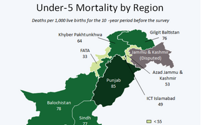
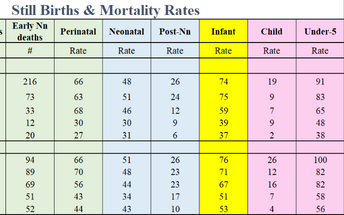
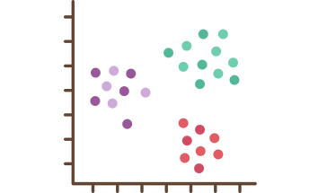
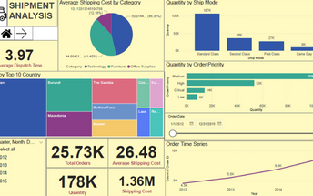
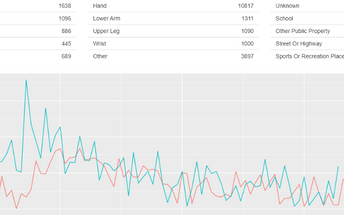
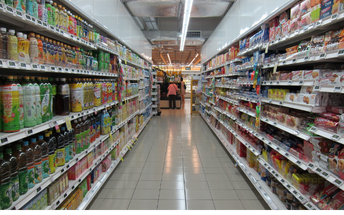
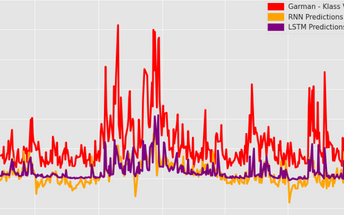

Portfolio
We enjoy solving data problems of your organization whether it is an FMCG company struggling to track and monitor its products or a declining E-Commerce company with low customer retention and high competition.
Our Business Analysts and Data Scientists can help you solve your business problems by putting data science, research and automation to extract actionable insights of your business data. Our growing work reference is indication of the quality service we provide to our clients.
Macro Analysis and Research

Analysing Pakistan Health Sector
How has Pakistan performed in Public Health Parameters, Social Living Measurement & Burden of Disease Indicators? What are the benchmarks set by SDG and how is Pakistan performing? We conducted a collaborative study with the help of Indus Hospital & Health Networks and Sifat Associates to provide a broad understanding of health deficiencies experienced by Most Disadvantaged Districts (MDDs) in Pakistan.

Infant Mortality Modelling
The MDG target for Infant Mortality was 40 per 1000 live births while Pakistan stood at 62 per 1000 live births. We analyzed the causes of Infant Mortality in Pakistan and why Pakistan is lagging behind ? Are there demographic variations or mother’s social and health factors? We developed and deployed a Machine learning model for infant’s survival chances based on PDHS 2017-2018 data.

Clustering Countries
We analyzed data of countries based on their socio-economic and health indicators. Through this the overall development levels of the country were determined. Subsequently, they were categorized according by using clustering techniques and the least developed countries were then identified.
Interactive Applications & Dashboards

Power BI Dashboard for an E-commerce Platform
An analytical report was created based on historical data of several functions of an e-commerce store including employees, shipment, products and an overall performance dashboard. These highlighted key metrics useful for monitoring the performance of the company and several visuals that provided insights at a granular level.

National Electronic Injury Surveillance Data Exploration
Some population groups are at increased risk of injury because of greater exposure to hazards, decreased ability to avoid hazards, or decreased resistance to injury, and some groups have a lower likelihood of complete recovery or survival once injured. This interactive shiny application helps explore injury patterns.
Predictive Modelling

Product Recommendation
Analyzing past customer behavior helps sellers push relevant recomendations to consumers. We studied data of past purchases of customers of an online retail store. We then implemented a product recommendation system based on association rule mining technique.

Stock Volatility Forecasting
With successful volatility model, we can gain insights about future market behavior over time and can spot trends which make investors align their portfolios with the associated expected returns. In this study we compared Econometric & Deep learning techniques of stock volatility forecasting.